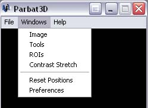

An image must first be loaded. See loading an image
If the Image Window is not already visible, click on the 'Window' menu followed by 'Image'.

Click on the 'Image' tab within the Tools Window.

Image properies include:
File Name - Name and Path of loaded image file.
File Type - Format of loaded image file.
Width - Width in pixels of loaded image file.
Height - Height in pixels of loaded image file.
Bands - Number of bands in loaded image file (eg. Red, Green, Blue, Infra Red, etc.)